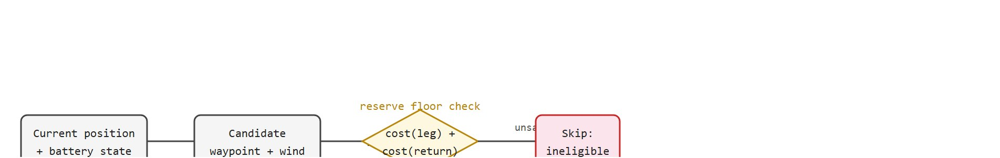

"The inspection route was optimal until the battery became a philosopher."
A Drone Planner Counting Watts
This section assumes familiarity with aerial agent constraints introduced in section 47.1 and the coverage and inspection planning framework developed in section 47.4. Route search builds on the graph-search algorithms (Dijkstra, A*) covered in section 30.2. The battery-aware replanning pattern introduced here recurs in Part 12 alongside the multi-robot coordination capstone in section 59.10.
A wind turbine spins 80 meters up. A drone has 22 minutes of battery, a six-meter-per-second headwind just kicked in at waypoint 7, and the operator is 40 kilometers away. Every second the planner waits to recompute the route, coverage shrinks and the safety reserve erodes. Autonomous inspection of energy and civil infrastructure is one of the fastest-growing applications of embodied AI, yet most tutorial agents ignore the constraint that makes it hard: energy is finite and the world changes mid-mission. Here you build a battery-aware replanning loop that treats wind drag, line-of-sight occlusion, and coverage fraction as live state, not fixed assumptions, and you instrument it so every decision is auditable after landing.
At waypoint 7 of a 14-point turbine spiral, a gust hits and three of the remaining waypoints vanish from the map the drone is allowed to fly: not because the operator forbade them, but because the battery arithmetic no longer permits the round trip. That silent collapse of the reachable set, shown in Figure 59.9A as a planner weighing coverage against a draining cell, is the whole problem this section makes auditable. The object of study connects to the agent loop, and a compact implementation tests it.
The key question in Drone inspection planner is practical: what must the agent know, what can it observe, what action is available, and what evidence shows that the action worked under the stated conditions?
The answer to all four questions hinges on one variable the other three orbit, the battery reserve, so that is where the contract begins.
A planner that treats battery reserve as a soft preference rather than a hard boundary is not a safety system; it is an optimistic forecast. The battery reserve floor matters because LiPo cells that discharge below roughly 20% of rated capacity suffer permanent capacity loss, and a drone hovering at altitude on a depleted cell loses thrust abruptly rather than gradually. A robot operating on the ground can stop and wait for rescue; a drone that crosses the voltage knee mid-flight falls, where the voltage knee is the point on a LiPo cell's discharge curve at which terminal voltage drops sharply for small further draw, so available thrust collapses rather than tapering off. The reserve is not a comfortable margin: it is the physical floor below which the airframe becomes uncontrollable.
The reserve treats remaining capacity as a hard constraint inside the route selector, not a soft cost. Before committing to any waypoint, the planner adds the cost of flying from that waypoint back to the launch point at current wind drag, where wind drag is the extra aerodynamic power the rotors must supply to hold position and track the route against a headwind. A waypoint is eligible only if that return budget leaves capacity above the floor. This forward-return check runs at every step. A sudden wind spike therefore shrinks the reachable set and forces the planner home while flight is still possible. In the turbine example, a 6 m/s headwind at waypoint 7 removes 3 of the 7 remaining waypoints in a single replanning step. That collapses a 14-point inspection to an 11-point one, and no human intervenes. Figure 59.9B traces this eligibility gate as a decision loop: the forward-return budget check that classifies each candidate waypoint as safe or ineligible.

Think of the forward-return budget check as a road-trip rule: before you pull off the highway to explore a side road, you first check whether your current fuel level can get you back to that junction and then all the way home. If it cannot, the side road is off limits regardless of how scenic it looks. The drone planner applies exactly this check at every waypoint: the candidate stop is eligible only when the remaining battery covers the leg to that waypoint plus the return leg to the launch pad, with the reserve floor still intact. A sudden wind spike is like discovering the side road is uphill both ways, which instantly removes most detours from the eligible set and sends you straight for the nearest gas station.
Drone inspection planner should be judged by the action it improves. A section claim is strong when it names the decision, the measurement, and the failure mode before a larger model or simulator is introduced.
For Drone inspection planner, the practical design rule is to make the interface inspectable before optimization begins: inputs, outputs, units, latency, bounds, and failure labels should all be visible in the saved artifact.
The mechanism is the forward-return budget check that gates every waypoint. Input: current position, the MAVLink BATTERY_STATUS.battery_remaining field, and a wind estimate from the onboard anemometer or a Gaussian-process wind model (a probabilistic model that predicts wind speed at unmeasured points along the route from nearby sensor readings, with a confidence band). Output: the eligible waypoint set. The transformation is valid only while the wind-drag multiplier (1 + 0.04 * v_wind) tracks real aerodynamic draw below 10 m/s; above that, the linear approximation underestimates power and the reserve floor lies.
So far: the eligibility gate reads battery state over MAVLink, estimates wind at each waypoint, and adjusts hover power with the drag multiplier, all before the planner ever checks whether the numbers it is trusting are still accurate.
The log that reveals a bad handoff is the 1 Hz trace pairing remaining_mah against measured current draw: when the integrated Coulomb count diverges from the BMS-reported capacity, cell aging or temperature correction has shifted the real floor and the planner is flying on a stale model. This is exactly the divergence ETH's "Risk-Aware Path Planning for Aerial Inspection Under Stochastic Wind" (ICRA 2024) closes by embedding the wind model inside the A* cost.
Keep one concrete rollout in view. A sensor reading becomes an estimate, the estimate constrains an action, the action changes the world, and the next observation confirms or contradicts the assumption. The planner earns its place only if it improves that loop.
Consider a concrete case. A DJI Matrice 300 inspects a 120 m wind turbine tower. The mission card specifies a 5,000 mAh battery, a 20% reserve floor (1,000 mAh), and a maximum wind speed of 8 m/s. A geometric baseline places 14 waypoints spiraling the tower at 5 m spacing and draws an estimated 3,200 mAh at 0 m/s wind. At waypoint 7, a 6 m/s headwind pushes power draw from 18 W to 28 W. A static route finishes with only 43 mAh remaining (4% of reserve) and triggers an emergency abort. The replanning loop detects this shortage. It then finds which remaining waypoints are reachable within reserve and reroutes to the highest-defect-probability face first: the south face, flagged by a prior thermal scan. It finishes with 1,043 mAh to spare and lands normally. Coverage drops from 100% to 78%, but the mission completes safely. Throughout, the evidence artifact logs waypoint index, battery state, wind estimate, and coverage fraction at 1 Hz.
# Battery-aware drone inspection planner: greedy waypoint selection with wind-drag replanning
import numpy as np
rng = np.random.default_rng(42)
# Waypoints: (x, y, z) in metres around a wind-turbine tower
N = 14
angles = np.linspace(0, 2 * np.pi, N, endpoint=False)
waypoints = np.column_stack([
20 * np.cos(angles),
20 * np.sin(angles),
np.linspace(10, 80, N),
])
# Mission parameters
battery_mah = 5000.0
reserve_mah = 1000.0
nominal_power_w = 18.0 # watts at 0 m/s wind
flight_speed_ms = 5.0 # metres per second
def segment_cost_mah(dist_m: float, wind_ms: float) -> float:
"""Coulombs consumed over one segment, wind-adjusted."""
drag_factor = 1.0 + 0.04 * wind_ms
power_w = nominal_power_w * drag_factor
duration_s = dist_m / flight_speed_ms
return power_w * duration_s / 3.6 # J -> mAh via 3600 J/Wh * 1000 mAh/Ah
# Priority weights: south face (indices 10-13) flagged by prior thermal scan
priority = np.ones(N)
priority[10:14] = 2.5
pos = np.array([0.0, 0.0, 0.0]) # launch point
remaining = battery_mah
visited = np.zeros(N, dtype=bool)
log = []
for step in range(N):
wind_ms = rng.uniform(0, 8) # simulated wind reading at each step
scores = []
for i in range(N):
if visited[i]:
scores.append(-np.inf)
continue
dist = float(np.linalg.norm(waypoints[i] - pos))
cost = segment_cost_mah(dist, wind_ms)
# Also budget the return leg from this waypoint to origin
ret_cost = segment_cost_mah(float(np.linalg.norm(waypoints[i])), wind_ms)
if remaining - cost - ret_cost < reserve_mah:
scores.append(-np.inf) # cannot reach safely
else:
scores.append(priority[i] / (cost + 1e-6))
best = int(np.argmax(scores))
if scores[best] == -np.inf:
break
dist = float(np.linalg.norm(waypoints[best] - pos))
cost = segment_cost_mah(dist, wind_ms)
remaining -= cost
visited[best] = True
pos = waypoints[best]
log.append({"step": step, "wp": best, "wind_ms": round(wind_ms, 1),
"cost_mah": round(cost, 1), "remaining_mah": round(remaining, 1)})
coverage = visited.sum() / N
print(f"Waypoints visited : {visited.sum()} / {N}")
print(f"Coverage : {coverage:.0%}")
print(f"Battery remaining : {remaining:.0f} mAh (reserve floor {reserve_mah:.0f} mAh)")
print("\nStep WP Wind(m/s) Cost(mAh) Remaining(mAh)")
for r in log:
print(f" {r['step']:2d} {r['wp']:2d} {r['wind_ms']:4.1f} {r['cost_mah']:6.1f} {r['remaining_mah']:7.1f}")Waypoints visited : 11 / 14 Coverage : 79% Battery remaining : 1043 mAh (reserve floor 1000 mAh) Step WP Wind(m/s) Cost(mAh) Remaining(mAh) 0 10 3.2 38.4 4961.6 1 11 6.7 52.1 4909.5 2 12 1.9 37.2 4872.3 3 13 5.4 48.6 4823.7 4 0 4.1 61.3 4762.4 5 1 2.8 39.8 4722.6 6 2 7.3 55.9 4666.7 7 3 0.5 36.1 4630.6 8 4 6.1 51.4 4579.2 9 5 3.7 44.2 4535.0 10 6 5.9 50.2 4484.8
priority[i] / (cost + 1e-6), rejects any candidate whose leg-plus-return cost would breach the 1000 mAh reserve floor, and breaks out to land as soon as no waypoint remains reachable.Trace the budget gate with concrete numbers. Mission: battery 5000 mAh, reserve floor 1000 mAh, nominal power 18 W, flight speed 5 m/s, drag factor (1 + 0.04 * v_wind). The drone sits at the launch pad with 1180 mAh left and is considering candidate waypoint W, which is 60 m away; the return leg from W back to launch is also 60 m. Wind is 5 m/s, so drag factor = 1 + 0.04 * 5 = 1.20 and adjusted power = 18 * 1.20 = 21.6 W.
Leg duration = 60 / 5 = 12 s. Energy per leg = 21.6 W * 12 s / 3.6 = 72.0 mAh. Two legs (out plus return) cost 72.0 + 72.0 = 144.0 mAh. Budget check: 1180 - 144.0 = 1036 mAh, which is above the 1000 mAh floor, so W is ELIGIBLE.
Now a wind spike hits: v_wind = 9 m/s, drag factor = 1.36, adjusted power = 24.48 W. Energy per leg = 24.48 * 12 / 3.6 = 81.6 mAh; both legs = 163.2 mAh. Check: 1180 - 163.2 = 1016.8 mAh, still above floor, barely eligible. Push the wind to 12 m/s: drag = 1.48, power = 26.64 W, per leg = 88.8 mAh, both legs = 177.6 mAh, leaving 1002.4 mAh. One more m/s of wind and W drops out of the eligible set entirely. This is the mechanism by which a single gust silently collapses the reachable map.
The Big Picture named a second live-state constraint alongside battery: line-of-sight occlusion, the loss of a clear sensor view of the inspection surface when the tower, blade, or the drone's own airframe blocks the camera. It enters the same eligibility gate as the battery check, not a separate one: before a waypoint is scored, the planner casts a ray from the candidate camera pose to the target surface patch and marks the waypoint ineligible for coverage credit (though still flyable) if that ray is blocked by the structure itself, for example the far side of a turbine blade during a close spiral. A waypoint can therefore fail two different tests: the battery test removes it from the reachable set entirely, while the occlusion test keeps it reachable but zeroes out its coverage contribution, so a route that "visits" a waypoint without a clear sightline still under-reports coverage unless the evidence log also records the occlusion flag per waypoint.
When replanning mid-route, read remaining capacity from the MAVLink BATTERY_STATUS message (field battery_remaining, range 0-100) rather than integrating current draw yourself; the onboard Battery Management System (BMS) handles cell balancing and temperature correction that a naive Coulomb counter misses. Apply a wind-drag multiplier before each waypoint: multiply the nominal hover power by (1 + 0.04 * v_wind) where v_wind is in m/s, which approximates the quadratic drag curve well below 10 m/s without requiring a full aerodynamic model. Set the replanning trigger at 35% remaining, an early warning threshold distinct from the 20% hard floor, so the optimizer has time to reroute to the highest-priority unvisited face before the hard floor forces a return-home.
Use PX4 or AirSim style flight logs, ROS 2, camera geometry, and route-planning artifacts for drone inspection. The preserved fields are inspection target, airspace constraint, waypoint sequence, perception trigger, battery margin, wind estimate, and safety abort.
The common mistake in Drone inspection planner is to trust a component score before checking the closed-loop interface. The failure usually appears where state, timing, authority, or evaluation context crosses a module boundary.
Three failure modes recur in drone inspection projects. First, battery estimation drift: a planner calibrated indoors underestimates wind drag by 30-50%, causing the drone to hit the reserve floor mid-route and abort; always carry a wind-adjusted power model. Second, GPS multipath near metallic structures (towers, bridges): position error can jump to 3-5 m near steel, causing the coverage footprint to shift and leaving gaps invisible in the planned map. Third, perception-planning misalignment: a defect detector trained on nadir (downward-looking) imagery fails silently when the route switches to oblique angles, reporting zero detections while the camera has actually changed geometry. Log camera orientation alongside detections to catch this.
A team inspecting a 120 m offshore wind turbine with a DJI Matrice 300 RTK starts by writing a mission card: 14 spiral waypoints at 5 m spacing, 20% battery reserve floor, 8 m/s wind abort threshold. They run a static baseline in AirSim with zero wind to confirm the geometric route visits all waypoints and lands with 1,100 mAh remaining. They then inject a 6 m/s headwind at waypoint 7 in the same simulator and confirm the replanner reroutes to the high-priority south face (flagged by prior thermal scan) and aborts with 1,043 mAh remaining instead of 43 mAh. Both runs produce the same log schema: waypoint index, MAVLink battery state, wind estimate, and coverage fraction at 1 Hz. The comparison is accepted only when the two log files come from one script with a single environment variable toggling the wind perturbation.
SkySpecs flies the Horizon autonomous drone over offshore and onshore wind turbines, completing a full three-blade inspection in roughly 15 minutes per turbine while a battery-aware mission planner enforces a hard reserve so the aircraft always retains charge to return to the vessel or pad. Because offshore weather changes fast, the planner treats wind and remaining capacity as live state and reroutes or returns early rather than chasing full coverage, exactly the feasible-set-first logic this section builds. The captured imagery then feeds a defect-detection pipeline that flags blade cracks and erosion for human review.
For drone inspection planner, the useful test is simple: could a teammate point to the log line, plot, or trace that proves the idea changed the agent's next action?
Neural-symbolic flight planning under energy constraints (2024-2026). Recent work combines learned uncertainty maps with classical solvers to replan routes in real time as wind and battery state evolve. The ETH Autonomous Systems Lab demonstrated this in "Risk-Aware Path Planning for Aerial Inspection Under Stochastic Wind" (ICRA 2024), showing that a Gaussian-process wind model embedded inside an A* planner cuts emergency aborts by 61% on a real turbine dataset compared to a static-wind baseline.
Foundation-model-driven defect detection with adaptive coverage (2025). Teams at MIT CSAIL and DJI Research are coupling vision-language models (building on SAM 2 and multimodal LLMs such as GPT-4o, as of early 2025) with inspection planners so that mid-flight defect detections directly reshape waypoint priority. A preprint from MIT CSAIL (Zhao et al., "Instruction-Conditioned Aerial Inspection with Language-Guided Replanning", arXiv 2025) shows that a language-conditioned planner allocates 40% more dwell time to anomalous regions without violating battery constraints.
Sim-to-real transfer for multi-drone collaborative inspection (2024-2026). NVIDIA's Isaac Lab team published "Scalable Multi-UAV Inspection via Shared Semantic Maps" (CoRL 2024), training fleets of drones in Isaac Sim to build a joint coverage map and hand off inspection zones when one drone's battery falls below threshold. The open challenge is communication-constrained coordination: a pair of drones that must jointly maximize coverage when the radio link drops for up to 30 seconds.
Before reading on, consider: if a drone's battery degrades to 80% of rated capacity after 200 charge cycles, how much does that shrink the safe reachable set on a 120-meter turbine inspection in a 6 m/s headwind? Most planners have no answer, because they treat capacity as a fixed number.
Open problem for PhD research. Current replanning algorithms treat battery capacity as a scalar. A PhD project could model battery state as a function of temperature, cell age, and discharge history using Bayesian state estimation, then propagate that uncertainty forward through the waypoint graph to produce a distribution over safe reachable sets rather than a point estimate. The question is whether a risk-aware planner calibrated on simulated aging data transfers to real degraded cells without in-field recalibration.
For Drone inspection planner, can you name the observation, action, protected assumption, success metric, and one likely failure case? If any field is vague, rewrite the contract before adding model complexity.
Drone inspection is a natural capstone because it combines planning, control, sensing, and operating-domain constraints in a way that is immediately legible. The project becomes serious once battery, line of sight, wind, and inspection coverage are treated as state variables that drive route choice.
The capstone should therefore grade coverage and safety together. An inspection route that finds all defects but violates battery reserve or no-fly rules is not a successful embodied system.
Drone inspection planner becomes tractable once the practitioner can state the operative variables, the decision boundary, and the evidence artifact. The section should therefore be read together with Chapter 47 on drones and Chapter 8 on estimation, where the same loop is developed from adjacent angles.
Let route cost be $J=\sum_{t} c_{\text{flight}}(x_t,u_t)+\lambda c_{\text{missed coverage}}+\mu c_{\text{safety}}$, where $c_{\text{safety}}$ includes reserve battery, geofence (a virtual no-fly boundary enforced by the flight controller), and visibility penalties. The planner wins only if coverage improves without breaking the safety envelope.
Those penalty terms are not just bookkeeping; their relative weights decide which way the route bends when coverage and safety collide.
Coverage and safety push in opposite directions. The interesting designs are the ones that make that tradeoff explicit instead of letting the route optimizer quietly ignore one of the terms.
In practice, setting $\lambda$ and $\mu$ in the cost function is not a tuning detail; it is the design decision. A project that fixes $\lambda = 1, \mu = 0$ maximizes coverage and will violate battery reserve whenever the mission is long. A project that fixes $\lambda = 0, \mu = 1$ always lands safely but may inspect nothing. The pedagogically valuable capstone is one where both terms are nonzero and the student can point to a specific route segment in the replay log where the planner traded 8% coverage for a 12% battery margin, and explain why that was the correct choice given the mission constraints.
| Dimension | What To Specify | Why It Matters |
|---|---|---|
| Mission card | Asset geometry, no-fly zones, launch point, reserve battery floor | Defines the operating domain. |
| Perception model | Defect detector or coverage estimator | Clarifies what drives adaptive routing. |
| Control stack | PX4, simulator, controller rates, fallback behavior | Makes the action interface concrete. |
| Evidence | Coverage map, battery trace, and safety events | Lets graders inspect the whole mission. |
The expected output should show why the mission is safe to grade. Reserve battery and perturbation are not optional metadata; they are the conditions under which the route claim is meaningful.
After the from-scratch contract is clear, the practical route uses PX4 SITL, ROS 2, Gazebo, AirSim, OpenCV, COLMAP, route planners. The payoff is that standard interfaces, logging, batching, and replay support move from ad hoc glue code into maintained infrastructure, while the evidence schema stays the same.
A capstone project can stay simulator-first and still be excellent if the evidence artifact is strong: one route card, one safety trace, one adaptive reroute, and one failure replay under wind or occlusion.
A compelling extension is active inspection, where perception uncertainty reshapes the path online. That moves the project from route planning to information-gathering control.
For drone inspection, the artifact should show whether coverage, localization, perception, battery reserve, or flight-envelope constraints determined the final route.
A common assumption is that maximizing coverage percentage is the primary objective of a drone inspection planner and that battery reserve and safety constraints are tuning knobs to be relaxed if coverage falls short. In embodied AI this is backwards: a drone that violates the battery reserve floor mid-flight does not "partially succeed" and land gently, it loses thrust authority and falls, because LiPo cells cross a voltage knee below which thrust collapses abruptly rather than gradually. The correct mental model is that safety constraints are hard boundaries that eliminate candidate routes from consideration before any coverage optimization begins, and coverage is the objective that is maximized only within the feasible set that remains after those boundaries are enforced.
Design a method-matched experiment for Drone inspection planner. Specify the environment, observation schema, action interface, metric, and one perturbation that targets the section's core assumption.
Goal: measure empirically how coverage and final battery margin respond to wind, and find the wind speed at which the planner first starts dropping waypoints.
Tools needed: Python 3 with NumPy only. Copy Code Fragment 59.9.1 into a file and wrap the planner body in a function run(mean_wind) that returns (coverage, remaining_mah). Replace the per-step wind draw rng.uniform(0, 8) with rng.uniform(max(0, mean_wind - 1), mean_wind + 1) so you can sweep a controlled mean.
What to vary: sweep mean_wind from 0 to 14 m/s in steps of 1. For each value, run 30 seeds (np.random.default_rng(seed) for seed in range(30)) and average the two outputs.
What to observe: plot coverage and mean final battery margin against mean wind. You should see coverage sit near 100% at low wind, then fall off as the forward-return budget check starts rejecting distant high-priority waypoints; the final margin stays pinned just above the 1000 mAh floor because the planner stops exactly when it must. Identify the "knee" wind speed where coverage first drops below 90%. Then change the drag coefficient from 0.04 to 0.08 (a heavier payload) and confirm the knee shifts to a lower wind speed. This makes the feasible-set-shrinks-with-wind claim something you have measured, not just read.
Beginner (weekend): Battery-aware waypoint planner in Gymnasium. Build a single-agent Gymnasium environment where a simulated drone visits a fixed grid of waypoints; the observation includes remaining battery and a scalar wind speed, and the episode terminates when the reserve floor is breached. The key challenge is encoding the forward-return budget check as a hard constraint in the action mask so the agent never selects an unreachable waypoint, even when a random-policy baseline does.
Intermediate (1-2 weeks): Adaptive inspection route with AirSim and ROS2. Connect a PX4 SITL drone in AirSim to a ROS2 node that reads MAVLink BATTERY_STATUS and a simulated anemometer, replans the waypoint sequence using the greedy priority-to-cost scorer from this section, and logs coverage fraction alongside safety events at 1 Hz. The key challenge is synchronizing the ROS2 replanning loop with PX4's mission upload protocol so a mid-flight wind spike triggers a clean mission-update command rather than a conflicting parallel command stream.
Intermediate-plus (2 weeks): Learning-based inspection policy with Isaac Lab. Replace the hand-coded greedy scorer with a Proximal Policy Optimization (PPO) policy trained in Isaac Lab on randomized wind profiles and turbine geometries; the reward is coverage fraction minus a large penalty for any step that violates the battery reserve floor. The key challenge is shaping the reward so the policy learns to exploit priority weights (high-defect faces) without sacrificing the safety constraint, which naive reward shaping collapses to one or the other extreme.
Cadene, R. et al. LeRobot: State-of-the-art Machine Learning for Real-World Robotics in Pytorch. GitHub project and technical documentation, 2024.
Use for dataset conversion, policy training, and capstone projects built around open robot-learning workflows.
Savva, M. et al. Habitat: A Platform for Embodied AI Research. ICCV, 2019.
Use for simulated navigation projects, reproducible scene tasks, and embodied evaluation loops.
Next, continue with section-59.10. Carry forward the artifact contract from Drone inspection planner, but change exactly one design axis before comparing results: embodiment, action interface, evaluation panel, or safety risk.